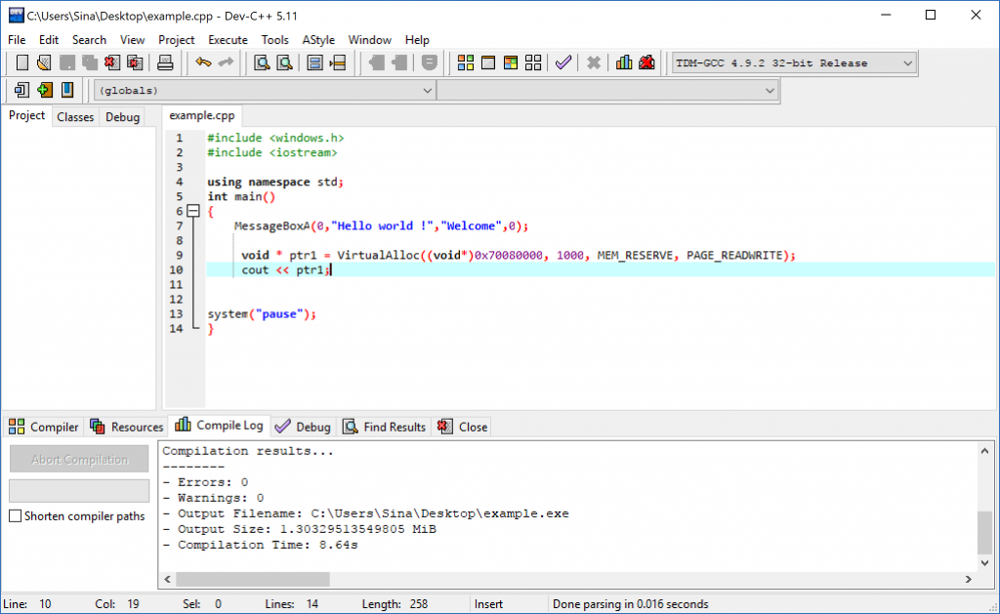
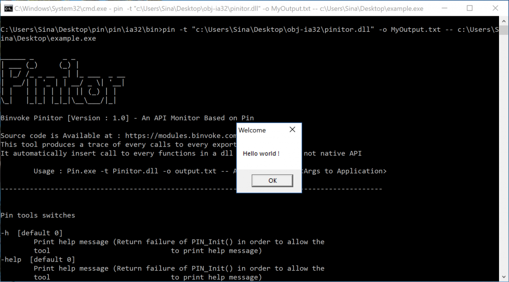
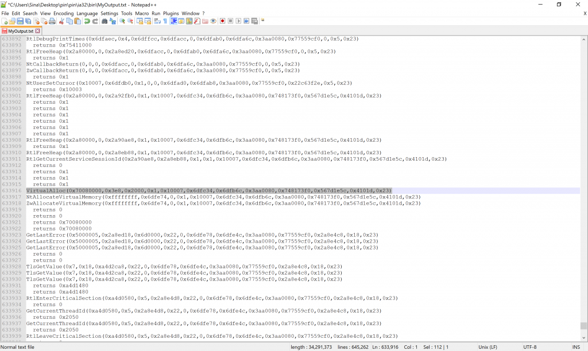

In the last few days, I was thinking about finding a way to discover the Native Windows APIs which malware programmers are more interested in. What I did was downloading a sample of 48k malware from VxHeaven collection and using Rohitab’s API Monitor which is a sophisticated tool in which you can find what is happening in your PE. There are also other tools that do the same thing but I almost everytime use Rohitab’s tool.
After struggling with such tools, I figured out that this tool is not good enough in analyzing these samples because they actually hook everything or somehow they are known applications which some packers or protectors search for them among all the processes or if you wanna debug them, there are many nasty anti-debugging techniques that are hard to bypass so let’s get rid of all of them and use instrumentation in order to defeat these techniques.
I create a pin tool which is able to have the functionality of API Monitor but based on dynamic instrumentation and Intel’s pin and it “Pinitor” which stands for Pin Monitor and actually this is a tool which detects every API calling by instrumenting the target executable.
Pinitor create a call to one of its events, so that every time a new module (e.g .dll) loaded, it notifies pin about it and then search for every exported function in that module by using the EnumExportedFunctions, After that it tries to put a call in every function or in Windows Native API so everytime any of these functions called then Pinitor captures 12 arguments from the stack by default and save it in a file.
The problem here is, I don’t know a way of knowing how many inputs does a special function have! As I know all API Monitor applications contain a second file (data storage) which tells them about all the functions and its arguments, so if you know any other way, please tell me about it in comments!
Pinitor in its first version only works in Intel x86 systems, I’ve also built an x64 version of this tool whenever possible but for now, I think it should be a good tool for researching about binaries.
In the bottom of the post, I’ve added the source code so you can change and use it for your researching but compiling a pin tool in Windows is really tricky! It takes me, more than three days to build my first pin tool, but for the future, I prepare a blog post about how to build a pin tool and the errors that might happen during the pin tool compiling process.
Installing
First of all download pin from Intel’s website, then you can download Pinitor compiled binaries here, then you are good to go.
How to use
After downloading Pin and Pinitor then you should run pin with this tool, in the following example I demonstrate a simple example of how to use.
1
C:\pin\ia32\bin\pin.exe -t C:\Pintools\Pinitor.dll -o MyOutput.txt -- c:\Examples\Helloworld.exe
This will create a file (“MyOutput.txt”) then add the results to this file.
Examples
Imagine we built a native PE by using the following code :
Example.cpp
1
2
3
4
5
6
7
8
9
10
11
12
#include <windows.h>
#include <iostream>
using namespace std;
int main()
{
MessageBoxA(0,"Hello world !","Welcome",0);
void * ptr1 = VirtualAlloc((void*)0x70080000, 1000, MEM_RESERVE, PAGE_READWRITE);
cout << ptr1;
system("pause");
}

After that, you should run Pinitor based on how to use.

And now you are able to see the result, below is a small part of the output from Pinitor :
1
2
3
4
5
6
7
8
9
10
11
12
13
14
15
16
17
18
19
20
21
22
23
NtUserSetCursor(0x10007,0x6dfdb0,0x1,0,0,0x6dfad0,0x6dfab8,0x3aa0080,0x77559cf0,0x22c63f2e,0x5,0x23)
returns 0x10003
RtlFreeHeap(0x2a80000,0,0x2a92fb0,0x1,0x10007,0x6dfc34,0x6dfb6c,0x3aa0080,0x748173f0,0x567d1e5c,0x4101d,0x23)
returns 0x1
returns 0x1
returns 0x1
returns 0x1
returns 0x1
returns 0x1
RtlFreeHeap(0x2a80000,0,0x2a90ae8,0x1,0x10007,0x6dfc34,0x6dfb6c,0x3aa0080,0x748173f0,0x567d1e5c,0x4101d,0x23)
returns 0x1
RtlFreeHeap(0x2a80000,0,0x2a8eb88,0x1,0x10007,0x6dfc34,0x6dfb6c,0x3aa0080,0x748173f0,0x567d1e5c,0x4101d,0x23)
RtlGetCurrentServiceSessionId(0x2a90ae8,0x2a8eb88,0x1,0x1,0x10007,0x6dfc34,0x6dfb6c,0x3aa0080,0x748173f0,0x567d1e5c,0x4101d,0x23)
returns 0
returns 0x1
returns 0x1
returns 0x1
VirtualAlloc(0x70080000,0x3e8,0x2000,0x1,0x10007,0x6dfc34,0x6dfb6c,0x3aa0080,0x748173f0,0x567d1e5c,0x4101d,0x23)
NtAllocateVirtualMemory(0xffffffff,0x6dfe74,0,0x1,0x10007,0x6dfc34,0x6dfb6c,0x3aa0080,0x748173f0,0x567d1e5c,0x4101d,0x23)
ZwAllocateVirtualMemory(0xffffffff,0x6dfe74,0,0x1,0x10007,0x6dfc34,0x6dfb6c,0x3aa0080,0x748173f0,0x567d1e5c,0x4101d,0x23)
returns 0
returns 0
returns 0x70080000

In this way, you can use Pinitor for your own binaries.
Note
You might have encountered that some of the results are somehow wrong, I analyze the “example.exe” by a debugger and understand that this results are because of application’s internal calls which are not defined in any exported functions in dll(s) but as long as they are calls and have return then pin automatically prints them in the results. I can filter this kind of calls but I think this calls should exist in the results so you can also filter this kind of calls and returns in AddInvokeFunctionToFile by simply checking the name content and if the name is null then you can ignore the rest of operation.
Contributing
We are hardly working to create a binary analyzing and reverse engineering framework which is called Binvoke and this tool and many other tools will be added to the Binvoke Framework so any contribution and innovative idea will be appreciated.
Source Code
The source code is also available on GitHub :
[ https://github.com/SinaKarvandi/Pinitor ]
1
2
3
4
5
6
7
8
9
10
11
12
13
14
15
16
17
18
19
20
21
22
23
24
25
26
27
28
29
30
31
32
33
34
35
36
37
38
39
40
41
42
43
44
45
46
47
48
49
50
51
52
53
54
55
56
57
58
59
60
61
62
63
64
65
66
67
68
69
70
71
72
73
74
75
76
77
78
79
80
81
82
83
84
85
86
87
88
89
90
91
92
93
94
95
96
97
98
99
100
101
102
103
104
105
106
107
108
109
110
111
112
113
114
115
116
117
118
119
120
121
122
123
124
125
126
127
128
129
130
131
132
133
134
135
136
137
138
139
140
141
142
143
144
145
146
147
148
149
150
151
152
153
154
155
156
157
158
159
160
161
162
163
164
165
166
167
168
169
170
171
172
173
174
175
176
177
178
179
180
181
182
183
184
185
186
187
188
189
190
191
192
193
194
195
196
197
198
199
200
201
202
203
204
205
206
207
208
/* Imported Headers */
/* ===================================================================== */
#include "pin.H"
#include <iostream>
#include <fstream>
#include <string>
#include <stdio.h>
#include <string.h>
#include <stdlib.h>
#include <list>
/* ===================================================================== */
/* Global Variables */
/* ===================================================================== */
std::ofstream TraceFile;
std::list lst;
/* ===================================================================== */
/* Methods to enumerate exported functions from images (Module) */
/* ===================================================================== */
void EnumExportedFunctions(const char *, void(*callback)(char*));
int Rva2Offset(unsigned int);
typedef struct {
unsigned char Name[8];
unsigned int VirtualSize;
unsigned int VirtualAddress;
unsigned int SizeOfRawData;
unsigned int PointerToRawData;
unsigned int PointerToRelocations;
unsigned int PointerToLineNumbers;
unsigned short NumberOfRelocations;
unsigned short NumberOfLineNumbers;
unsigned int Characteristics;
} sectionHeader;
sectionHeader *sections;
unsigned int NumberOfSections = 0;
int Rva2Offset(unsigned int rva) {
int i = 0;
for (i = 0; i < NumberOfSections; i++) { unsigned int x = sections[i].VirtualAddress + sections[i].SizeOfRawData; if (x >= rva) {
return sections[i].PointerToRawData + (rva + sections[i].SizeOfRawData) - x;
}
}
return -1;
}
void EnumExportedFunctions(const char *szFilename, void(*callback)(char*)) {
FILE *hFile = fopen(szFilename, "rb");
if (hFile != NULL) {
if (fgetc(hFile) == 'M' && fgetc(hFile) == 'Z') {
unsigned int e_lfanew = 0;
unsigned int NumberOfRvaAndSizes = 0;
unsigned int ExportVirtualAddress = 0;
unsigned int ExportSize = 0;
int i = 0;
fseek(hFile, 0x3C, SEEK_SET);
fread(&e_lfanew, 4, 1, hFile);
fseek(hFile, e_lfanew + 6, SEEK_SET);
fread(&NumberOfSections, 2, 1, hFile);
fseek(hFile, 108, SEEK_CUR);
fread(&NumberOfRvaAndSizes, 4, 1, hFile);
if (NumberOfRvaAndSizes == 16) {
fread(&ExportVirtualAddress, 4, 1, hFile);
fread(&ExportSize, 4, 1, hFile);
if (ExportVirtualAddress > 0 && ExportSize > 0) {
fseek(hFile, 120, SEEK_CUR);
if (NumberOfSections > 0) {
sections = (sectionHeader *)malloc(NumberOfSections * sizeof(sectionHeader));
for (i = 0; i < NumberOfSections; i++) {
fread(sections[i].Name, 8, 1, hFile);
fread(§ions[i].VirtualSize, 4, 1, hFile);
fread(§ions[i].VirtualAddress, 4, 1, hFile);
fread(§ions[i].SizeOfRawData, 4, 1, hFile);
fread(§ions[i].PointerToRawData, 4, 1, hFile);
fread(§ions[i].PointerToRelocations, 4, 1, hFile);
fread(§ions[i].PointerToLineNumbers, 4, 1, hFile);
fread(§ions[i].NumberOfRelocations, 2, 1, hFile);
fread(§ions[i].NumberOfLineNumbers, 2, 1, hFile);
fread(§ions[i].Characteristics, 4, 1, hFile);
}
unsigned int NumberOfNames = 0;
unsigned int AddressOfNames = 0;
int offset = Rva2Offset(ExportVirtualAddress);
fseek(hFile, offset + 24, SEEK_SET);
fread(&NumberOfNames, 4, 1, hFile);
fseek(hFile, 4, SEEK_CUR);
fread(&AddressOfNames, 4, 1, hFile);
unsigned int namesOffset = Rva2Offset(AddressOfNames), pos = 0;
fseek(hFile, namesOffset, SEEK_SET);
for (i = 0; i < NumberOfNames; i++) {
unsigned int y = 0;
fread(&y, 4, 1, hFile);
pos = ftell(hFile);
fseek(hFile, Rva2Offset(y), SEEK_SET);
char c = fgetc(hFile);
int szNameLen = 0;
while (c != '\0') {
c = fgetc(hFile);
szNameLen++;
}
fseek(hFile, (-szNameLen) - 1, SEEK_CUR);
char* szName = (char*)calloc(szNameLen + 1, 1);
fread(szName, szNameLen, 1, hFile);
callback(szName);
fseek(hFile, pos, SEEK_SET);
}
}
}
}
}
fclose(hFile);
}
}
/* ===================================================================== */
/* It'll add exported functions into the lst */
/* ===================================================================== */
void mycallback(char* szName) {
lst.push_back(szName);
}
/* ===================================================================== */
/* Commandline Switches */
/* ===================================================================== */
// If you don't specify the the -o in command line, then the default output will be saved in pinitor.txt
KNOB KnobOutputFile(KNOB_MODE_WRITEONCE, "pintool",
"o", "pinitor.out", "specify trace file name");
/* ===================================================================== */
/* ===================================================================== */
/* Showing function names and their aruments */
/* ===================================================================== */
// As I mentioned in the my blog at http://rayanfam.com/topics/pinitor/ I have know idea about
// how to get the exact number of Arguments which is passed to the specific function except using
// a data file which previously stored every functions entrance argument, so if you know any other
// way then please tell me about it in my blog.
VOID AddInvokeFunctionToFile(CHAR * name, ADDRINT Arg1,ADDRINT Arg2 , ADDRINT Arg3, ADDRINT Arg4, ADDRINT Arg5, ADDRINT Arg6, ADDRINT Arg7, ADDRINT Arg8, ADDRINT Arg9, ADDRINT Arg10, ADDRINT Arg11, ADDRINT Arg12)
{
TraceFile << name << "(" << Arg1 << ","<< Arg2 << "," << Arg3 << "," <" << endl << endl;
cerr << "--------------------------------------------------------------------------------------------" << endl;
cerr << endl << KNOB_BASE::StringKnobSummary() << endl;
return -1;
}
/* ===================================================================== */
/* Main */
/* ===================================================================== */
int main(int argc, char *argv[])
{
Usage();
// Initialize pin & symbol manager
PIN_InitSymbols();
if(PIN_Init(argc,argv))
{
//Prints the usage
return Usage();
}
// Write to a file since cout and cerr maybe closed by the application
TraceFile.open(KnobOutputFile.Value().c_str());
TraceFile << hex;
TraceFile.setf(ios::showbase);
// Register Image to be called to instrument functions.
IMG_AddInstrumentFunction(Image, 0);
PIN_AddFiniFunction(Fini, 0);
// Never returns
PIN_StartProgram();
return 0;
}
/* ===================================================================== */
/* eof */
/* ===================================================================== */
This project is done by the contribution of my best friend Sima.
Todo :
- Show the exact number of Arguments to functions ( I have no idea except using a list of functions with their input parameters count. If you know the other ways please tell me in comments below.)
- Test And Publish the Result of most used functions in virus samples
- Build Such tool for ELF Binaries
- Build Intel64 version of Pinitor
Special thanks to Mahdi Golshani, one of my friends who makes the logo.
Comments powered by Disqus.